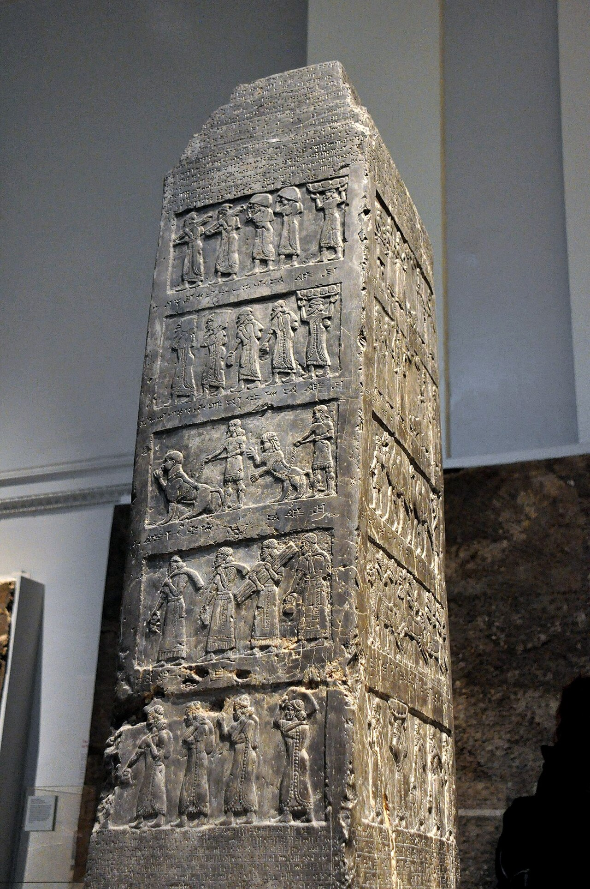

Black Obelisk of Shalmaneser III

- Find Name
- Black Obelisk of Shalmaneser III
- Historical Period
- Iron Age II
- Artifact Date
- c. 825 BC
- Date Discovered
- 1846
- Discovery Location
- Nimrud, Iraq (ancient Calah)
- Current Location
- British Museum, London
- Timeline Era
- Divided Monarchy
- Description
- A black limestone obelisk carved with tribute scenes from the reign of Assyrian king Shalmaneser III. One register shows a king of Israel kneeling before Shalmaneser, captioned as Jehu, 'son of Omri,' bringing tribute in about 841 BC.
- Biblical Significance
- It is the only known contemporary depiction of an Israelite king, and it confirms Jehu and the Omride dynasty from Assyrian records. Even in a scene of political submission, the stone preserves the names Scripture preserves, grounding Israel's kings in verifiable history.
- Evidence Class
- Direct
- Interpretations
- Scholars agree the obelisk shows Jehu of Israel paying tribute to Shalmaneser III; the inscription calls him ‘son of Omri,’ using the dynasty’s name rather than his actual father.
- Scripture Illuminated
- Related People
- Related Books
- Related Places
- Related Events